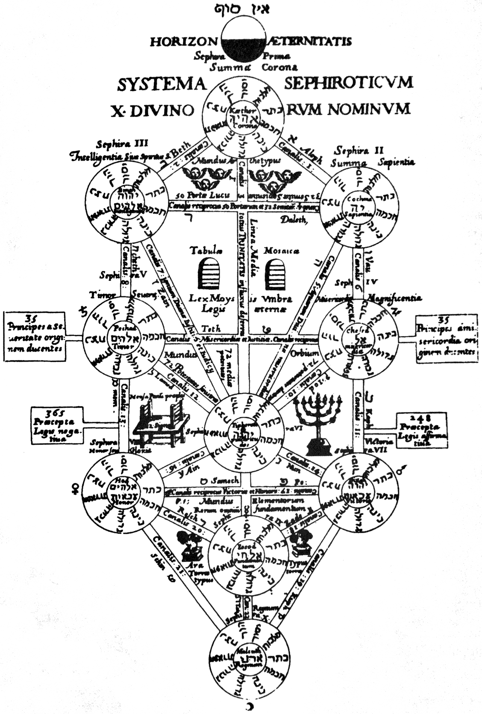

What is Evangelion?
Neon Genesis Evangelion (EVA/NGE) is a Japanese mecha anime television series produced by Gainax and animatedby Tatsunoko, directed by Hideaki Anno and broadcast on TV Tokyo from October 1995 to March 1996. (wiki)
Settings of this anime are mixed with a large number of religious elements, causing many Japanese anime imitation at the time.
